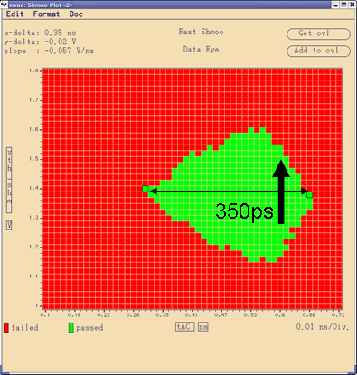
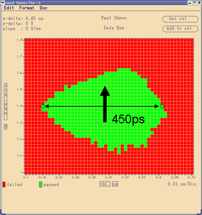

Using DataTraining for production
This solution implements a test method performing fast alignment of all output DQs utilizing per-pin timing. For HVM, throughput is key. Therefore, you normally switch off all data logging and just have the pass or fail results.
Example
The figure shows a measurement of the data lines of a real device before and after data training was applied. The data eye perceived by the test system widens significantly by 100ps for a GDDR3 device at 1.6Gbps, Vdd=1.8 V, Gapless, all 32 data pins (DQs).

